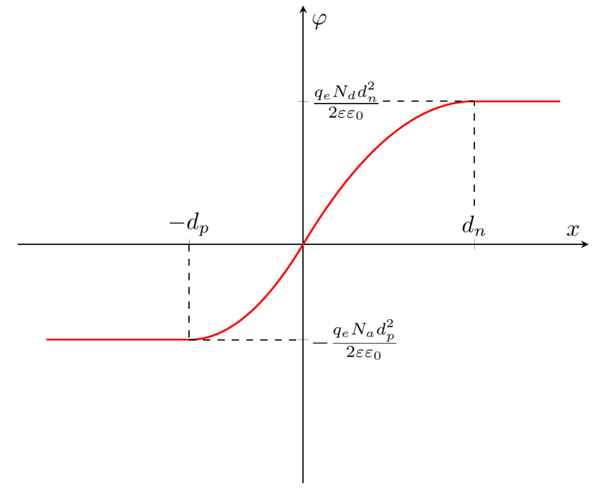
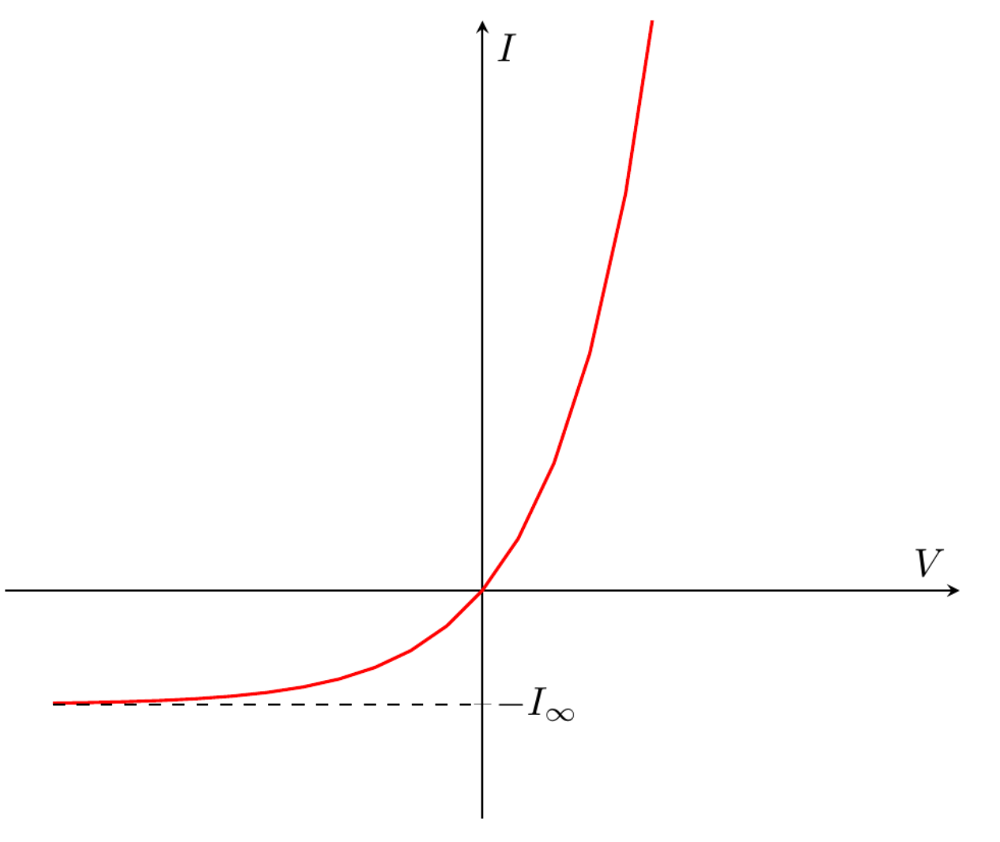

A1. Let $A$ be the contact area. The volume charge density is $\rho = \pm q_e N_{a,d}$ ($+$ for holes, $-$ for electrons), so the condition that the total charge of the holes and electrons is zero means $AN_ad_p = AN_dd_n$. Therefore
A2. By Gauss's law in differential form,
$$\mathrm{div}\vec E = \frac{\rho}{\varepsilon_0\varepsilon}.$$Since $\vec E = \vec E(x)$,
$$\mathrm{div}\vec E = \frac{dE_x}{dx},$$which proves the given formula.
A3. Using the result of A2 together with the relation between the concentration and the volume charge density, $\rho = \pm q_eN_{a,d}$ ($+$ for holes, $-$ for electrons), we obtain
$$\frac{dE_x}{dx} = \begin{cases} -\dfrac{q_eN_a}{\varepsilon_0\varepsilon}, & -d_p \le x \le 0,\\[2mm] \dfrac{q_eN_d}{\varepsilon_0\varepsilon}, & 0 < x \le d_n,\\[2mm] 0, & x < -d_p \text{ or } x > d_n.\end{cases}$$Now we need the indefinite integral and the constant of integration. To get the answer faster, let us compute the definite integral directly. Since $E_x(\pm\infty) = 0$,
$$E_x(x) = \int_{-\infty}^{x}E'(x)\,dx = -\int_{x}^{+\infty}E'(x)\,dx.$$Using these relations, we obtain the final answer:
A4. In one dimension $\varphi'(x) = -E_x(x)$. With the condition $\varphi(0) = 0$, the electrostatic potential can be written as
$$\varphi(x) = -\int_0^x E_x(x)\,\mathrm{d}x.$$Computing the integral directly, we obtain
A5.

A6. From A4,
$$\Delta\varphi = \frac{q_e\left(N_ad_p^2 + N_dd_n^2\right)}{2\varepsilon\varepsilon_0}.$$Using the relation $N_ad_p = N_dd_n$ obtained in A1,
$$\Delta\varphi = \frac{q_e\left(N_ad_p^2 + \frac{N_a^2}{N_d}d_p^2\right)}{2\varepsilon\varepsilon_0} = \frac{q_eN_a(N_a+N_d)d_p^2}{2\varepsilon\varepsilon_0N_d}.$$Similarly,
$$\Delta\varphi = \frac{q_e\left(\frac{N_d^2}{N_a}d_n^2 + N_dd_n^2\right)}{2\varepsilon\varepsilon_0} = \frac{q_eN_d(N_a+N_d)d_n^2}{2\varepsilon\varepsilon_0N_a},$$which gives the answer:
A7. From $E_x(x)$ obtained in A3, the absolute value of the electric field is maximal at $x = 0$, where
$$E_{\max} = \frac{q_eN_ad_p}{\varepsilon\varepsilon_0}.$$Substituting the expression for $d_p$ from A6, we obtain
B1. From the distribution of $n(x)$,
$$\frac{n(x=+\infty)}{n(x=-\infty)} = \exp\left(-\frac{U_n(x=+\infty) - U_n(x=-\infty)}{kT}\right)$$Before the voltage is applied, $n(x=+\infty) = N_d$ and $n(x=-\infty) = n_{10}$. When the voltage is applied, the potential energy difference of an electron $U_n(x=+\infty) - U_n(x=-\infty)$ changes by $(-q_e)\cdot(-V) = q_eV$. According to the problem statement, the electron concentration in the $n$-type semiconductor is $N_d$ regardless of the voltage. Hence after the voltage is applied still $n(x=+\infty) = N_d$, but $n(x=-\infty) = n_1$. Therefore
$$\frac{N_d}{n_1} = \exp\left(-\frac{q_eV}{kT}\right)\cdot\frac{N_d}{n_{10}},$$and hence
$$n_1 = n_{10}\cdot\exp\left(\frac{q_eV}{kT}\right).$$The expression for $p_1$ is obtained in the same way. From the distribution of $p(x)$,
$$\frac{p(x=+\infty)}{p(x=-\infty)} = \exp\left(-\frac{U_p(x=+\infty) - U_p(x=-\infty)}{kT}\right).$$Before the voltage is applied, $p(x=+\infty) = p_{10}$ and $p(x=-\infty) = N_a$. When the voltage is applied, the potential energy difference of a hole $U_p(x=+\infty) - U_p(x=-\infty)$ changes by $q_e\cdot(-V) = -q_eV$. According to the problem statement the hole concentration in the $p$-type semiconductor is $N_a$, so after the voltage is applied still $p(x=-\infty) = N_a$, but $p(x=+\infty) = p_1$. Therefore
$$\frac{p_1}{N_a} = \exp\left(\frac{q_eV}{kT}\right)\cdot\frac{p_{10}}{N_a},$$and hence
$$p_1 = p_{10}\cdot\exp\left(\frac{q_eV}{kT}\right).$$B2. Let $A$ be the cross-sectional area of the $n$-type semiconductor. Let us calculate the change of the number of holes in the small volume considered during a short time $\Delta t$. The change due to recombination is $\left(\frac{dp_1}{dt}\right)_{\mathrm{rec}}A\Delta x\Delta t$. The changes due to diffusion through the two planes are $J_p(x)A\Delta t$ (at the coordinate $x$) and $-J_p(x+\Delta x)A\Delta t$ (at $x+\Delta x$). The total number of holes, and hence their concentration, is constant, so the total change must be zero:
$$\left(\frac{dp_1}{dt}\right)_{\mathrm{rec}}A\Delta x\Delta t + J_p(x)A\Delta t - J_p(x+\Delta x)A\Delta t = 0.$$Therefore
$$\left(\frac{dp_1}{dt}\right)_{\mathrm{rec}} = \frac{J_p(x+\Delta x) - J_p(x)}{\Delta x} = \frac{dJ_p(x)}{dx} = -D_p\frac{d^2p_1}{dx^2}.$$$\Delta p$ and $p_1$ differ only by a constant, so
$$\frac{d^2p_1}{dx^2} = \frac{d^2\Delta p}{dx^2}.$$Taking into account that
$$\left(\frac{dp_1}{dt}\right)_{\mathrm{rec}} = -\frac{\Delta p}{\tau_p},$$we obtain
B3. The general solution of the equation obtained in B2 has the form
$$\Delta p = a\exp\left(-\frac{x}{\sqrt{\tau_pD_p}}\right) + b\exp\left(\frac{x}{\sqrt{\tau_pD_p}}\right),$$where $a$ and $b$ are coefficients. As $x \to +\infty$ the hole concentration must approach the equilibrium value $p_{10}$, so $\Delta p \to 0$ and $b = 0$. Therefore
$$\Delta p \sim \exp\left(-\frac{x}{\sqrt{\tau_pD_p}}\right),$$and $\Delta p$ changes $e$ times when $x$ changes by
B4. From the expression for $\Delta p$ obtained in B3, for $x > d_n$
$$p_1(x) = p_{10} + a\exp\left(-\frac{x}{L_p}\right),$$where $a$ is some coefficient. Inside the depletion layer the concentration $p(x)$ follows the Boltzmann distribution. Therefore
$$\frac{p(d_n)}{p(-d_p)} = \exp\left(-\frac{U_p(d_n) - U_p(-d_p)}{kT}\right).$$According to the problem statement the electric field outside the depletion layer can be taken as zero, so the whole voltage drop occurs within $-d_p \le x \le d_n$. Hence, when the voltage is applied, the potential energy difference of a hole $U_p(d_n) - U_p(-d_p)$ changes by $-q_eV$, and as in B1 we can write
$$\frac{p_1(d_n)}{N_a} = \exp\left(\frac{q_eV}{kT}\right)\frac{p_{10}}{N_a},$$from which
$$p_1(d_n) = \exp\left(\frac{q_eV}{kT}\right)p_{10} = p_{10} + a\exp\left(-\frac{d_n}{L_p}\right),$$so that
$$a = p_{10}\left(\exp\left(\frac{q_eV}{kT}\right) - 1\right)\exp\left(\frac{d_n}{L_p}\right).$$B5. To calculate the hole current, consider the $n$-type region near the boundary of the depletion layer, where the hole flux is determined by diffusion:
$$\begin{aligned}J_p = -D_p\frac{dp_1}{dx} &= \frac{D_pp_{10}}{L_p}\left(\exp\left(\frac{q_eV}{kT}\right) - 1\right)\exp\left(-\frac{x - d_n}{L_p}\right)\bigg|_{x=d_n}\\ &= \frac{D_pp_{10}}{L_p}\left(\exp\left(\frac{q_eV}{kT}\right) - 1\right).\end{aligned}$$The current density is $j_p = q_eJ_p$, so
B6. As in B5, the electron current has the form
$$j_n = \frac{q_eD_nn_{10}}{L_n}\left(\exp\left(\frac{q_eV}{kT}\right) - 1\right).$$Taking into account that
$$p_{10} = \frac{n_i^2}{N_d},\qquad n_{10} = \frac{n_i^2}{N_a},$$the required current, the sum of the hole and electron currents, is
$$I = q_eAn_i^2\left(\exp\left(\frac{q_eV}{kT}\right) - 1\right)\left(\frac{D_p}{L_pN_d} + \frac{D_n}{L_nN_a}\right).$$Using the answer of B3, we obtain
B7.

B8. The saturation current is
$$I_\infty = q_eAn_i^2\left(\frac{1}{N_d}\sqrt{\frac{D_p}{\tau_p}} + \frac{1}{N_a}\sqrt{\frac{D_n}{\tau_n}}\right) = 5.77\cdot 10^{-16}~\mathrm{A},$$and the current at $V = 0.7~\mathrm{V}$ is $I_1 = 3.23\cdot 10^{-4}~\mathrm{A}$.
Editor's note: the numbers of the original (marking scheme included) correspond to $n_i = 1.5\cdot 10^{16}~\mathrm{m^{-3}}$. With the $n_i = 1.0\cdot 10^{16}~\mathrm{m^{-3}}$ given in the problem, $I_\infty \approx 2.56\cdot 10^{-16}~\mathrm{A}$ and $I_1 \approx 1.44\cdot 10^{-4}~\mathrm{A}$.